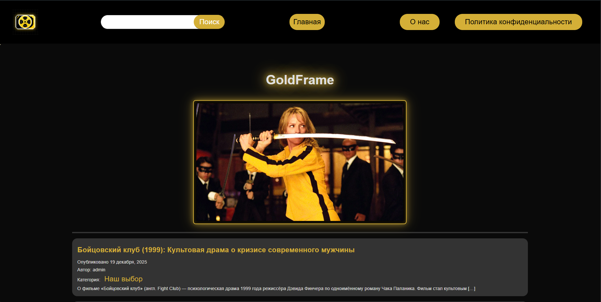

О себе
Студент 3 курса специальности "Информационные системы и программирование". Стремлюсь стать востребованным специалистом в области разработки программного обеспечения.
Знания
- Основные принципы объектно-ориентированного программирования
- Основы работы с базами данных и SQL
- Разработка простых приложений Android Studio
- Основы веб-разработки: HTML, CSS
Умения
- Разрабатывать программные модули в предметной области
- Проектировать и создавать базы данных mySql
- Работать с системами контроля версий git
- Тестировать программное обеспечение белый и черный ящик C#
- Знание HTML и CSS для создания структуры и стилизации веб-интерфейсов
Опыт
- Разработка программы для автоматизации задач с использованием базового класса C# и унаследованных классов
- Создание веб-сайта портфолио
- Выполнение учебных проектов по программированию
Место для фото, подтверждающего опыт (например, проект)
Личные качества
Ответственный, целеустремленный, способный к самообучению, внимательный к деталям, коммуникабельный, готовый работать в команде.
Место для фото, характеризующего личные качества
Профессиональные компетенции
Перечень общих (ОК), профессиональных (ПК) и дополнительных профессиональных (ДПК) компетенций по специальности 09.02.07 "Информационные системы и программирование":
Общие компетенции (ОК)
- ОК 01 Выбирать способы решения задач профессиональной деятельности применительно к различным контекстам
- ОК 02 Использовать современные средства поиска, анализа и интерпретации информации и информационные технологии для выполнения задач профессиональной деятельности
- ОК 03 Планировать и реализовывать собственное профессиональное и личностное развитие, предпринимательскую деятельность в профессиональной сфере, использовать знания по правовой и финансовой грамотности в различных жизненных ситуациях
- ОК 04 Эффективно взаимодействовать и работать в коллективе и команде
- ОК 05 Осуществлять устную и письменную коммуникацию на государственном языке Российской Федерации с учетом особенностей социального и культурного контекста
- ОК 06 Проявлять гражданско-патриотическую позицию, демонстрировать осознанное поведение на основе традиционных российских духовно-нравственных ценностей, в том числе с учетом гармонизации межнациональных и межрелигиозных отношений, применять стандарты антикоррупционного поведения
- ОК 07 Содействовать сохранению окружающей среды, ресурсосбережению, применять знания об изменении климата, принципы бережливого производства, эффективно действовать в чрезвычайных ситуациях
- ОК 08 Использовать средства физической культуры для сохранения и укрепления здоровья в процессе профессиональной деятельности и поддержания необходимого уровня физической подготовленности
- ОК 09 Пользоваться профессиональной документацией на государственном и иностранном языках
Профессиональные компетенции (ПК) - Разработка программных модулей
- ПК 1.1. Формировать алгоритмы разработки программных модулей в соответствии с техническим заданием
- ПК 1.2. Разрабатывать программные модули в соответствии с техническим заданием
- ПК 1.3. Выполнять отладку программных модулей с использованием специализированных программных средств
- ПК 1.4. Выполнять тестирование программных модулей
- ПК 1.5. Осуществлять рефакторинг и оптимизацию программного кода
- ПК 1.6. Разрабатывать модули программного обеспечения для мобильных платформ
Профессиональные компетенции (ПК) - Разработка и отладка программного обеспечения
- ПК 2.1. Разрабатывать требования к программным модулям на основе анализа проектной и технической документации на предмет взаимодействия компонент
- ПК 2.2. Выполнять интеграцию модулей в программное обеспечение
- ПК 2.3. Выполнять отладку программного модуля с использованием специализированных программных средств
- ПК 2.4. Осуществлять разработку тестовых наборов и тестовых сценариев для программного обеспечения
- ПК 2.5. Производить инспектирование компонент программного обеспечения на предмет соответствия стандартам кодирования
Профессиональные компетенции (ПК) - Сопровождение программного обеспечения
- ПК 4.1. Осуществлять инсталляцию, настройку и обслуживание программного обеспечения компьютерных систем
- ПК 4.2. Осуществлять измерения эксплуатационных характеристик программного обеспечения компьютерных систем
- ПК 4.3. Выполнять работы по модификации отдельных компонент программного обеспечения в соответствии с потребностями заказчика
- ПК 4.4. Обеспечивать защиту программного обеспечения компьютерных систем программными средствами
Профессиональные компетенции (ПК) - Проектирование и разработка баз данных
- ПК 11.1. Осуществлять сбор, обработку и анализ информации для проектирования баз данных
- ПК 11.2. Проектировать базу данных на основе анализа предметной области
- ПК 11.3. Разрабатывать объекты базы данных в соответствии с результатами анализа предметной области
- ПК 11.4. Реализовывать базу данных в конкретной системе управления базами данных
- ПК 11.5. Администрировать базы данных
- ПК 11.6. Защищать информацию в базе данных с использованием технологии защиты информации
Дополнительные профессиональные компетенции (ДПК)
- ДПК 2.1 Использование системного анализа и методологий проектирования (например, унифицированного языка моделирования (Unified Modelling Language), программной платформы MVC (Model-View-Control), фреймворков, шаблонов проектирования)
- ДПК 2.2 Работа с системой контроля версий
Место для фото, подтверждающего компетенции (например, диплом или сертификат)
Достижения
Грамоты
Благодарности
Дипломы
Сертификаты
Работы
1. Проекты
Место для фото курсовой работы
2. Отчёты по учебной практике
Отчет по учебной практике в Android Studio
Отчет по учебной практике "PHP"

Сайт написанный на PHP и Wordpress
3. Исследовательские работы, проекты
Место для фото исследовательской работы
Документы
Сертификаты и свидетельства о дополнительном образовании:
Характеристика:
Место для фото документов (зачетка, студенческий и др.)
Я гражданин
Грамоты, благодарности и благодарственные письма:
Участие в мероприятиях:
Контакты
Связаться со мной
Телефон: +7 900 000 00 00
Почта: ikirichenko345@gmail.com
Наши контакты
ГАПОУ СО "Екатеринбургский колледж транспортного строительства"
Специальность: 09.02.07 "Информационные системы и программирование"
Группа: ПР-32
2025 год